Magiku(r)p
PostgreSQL Backup & Restore Web Application
Manuale Utente
Versione 3.4.0
MagikUp
Aprile 2026
1. Introduzione
1.1 Panoramica
Magiku(r)p è un’applicazione web per la gestione di backup, restore e trasferimento di database PostgreSQL.
Supporta connessioni dirette e connessioni tramite tunnel AWS SSM attraverso jump host EC2 configurabili.
Funzionalità principali:
- Backup — Backup completi o per schema con output in tempo reale
- Restore — Ripristino con selezione schema e remapping ruoli
- Transfer — Copia database one-click tra qualsiasi endpoint
- Query Editor — Esecuzione query SQL con object browser e esportazione risultati
- File Manager — Upload, download e gestione file di backup (fino a 5 GB)
- Multi-Utente — Tre ruoli (Admin, Operator, Viewer) con permessi granulari
- Sicurezza — Rate limiting, lockout account, policy password, audit log
- SSM Tunnel — Port forwarding attraverso EC2 jump host con AWS Systems Manager
1.2 Requisiti
Per il deploy Kubernetes
- Cluster Kubernetes con
kubectl configurato
- Nginx Ingress Controller installato
- Storage class disponibile per i Persistent Volume Claim
- Accesso a un container registry (es. GHCR)
Per l’uso
- Browser moderno (Chrome, Firefox, Edge, Safari)
- Credenziali di accesso fornite dall’amministratore
- (Opzionale) Credenziali AWS con permessi SSM per tunnel
1.3 Architettura
L’applicazione è composta da:
- Backend: FastAPI (Python) con WebSocket per streaming real-time
- Frontend: HTML/CSS/JS con Bootstrap 5 e tema chiaro/scuro
- Storage: File system per backup e configurazione (PVC in Kubernetes)
- Autenticazione: Sessioni firmate con token, gestione utenti su file JSON
Browser (UI)
│ HTTP / WebSocket
▼
FastAPI (main.py) ── Auth (auth.py) ── Users (users.json)
│
├── Config (config.py) ── config.ini
├── Backup/Restore (backup_restore.py) ── pg_dump / pg_restore
├── SSM Tunnel (ssm_tunnel.py) ── AWS SSM Session
├── DB Service (db_service.py) ── psycopg2
└── AWS Service (aws_service.py) ── boto3
2. Installazione e Deploy
2.1 Deploy su Kubernetes
Build e Push dell’immagine
# Build dell'immagine Docker
docker build -t ghcr.io/fpellizz/magikup:3.4.0 .
# Push al registry
docker push ghcr.io/fpellizz/magikup:3.4.0
Configurazione Secrets
Copiare il template del secret:
cp kubernetes/secret.yaml.example kubernetes/secret.yaml
Generare la chiave di cifratura Fernet:
python -c "from cryptography.fernet import Fernet; print(Fernet.generate_key().decode())"
Sostituire REPLACE_WITH_GENERATED_KEY in secret.yaml con la chiave generata.
Configurazione Ingress
Modificare il file kubernetes/ingress.yaml e sostituire magikup.example.com con l’hostname reale.
Context Path: Per il deploy sotto un prefisso URL (es.
/magikup),
impostare la variabile d’ambiente
ROOT_PATH nel file
kubernetes/deployment.yaml
e configurare le regole di path nell’ingress. Vedi la sezione
2.5 Context Path / Reverse Proxy per i dettagli.
Deploy con Kustomize
# Applica tutti i manifest
kubectl apply -k kubernetes/
# Verifica lo stato
kubectl get pods -l app=magikup
kubectl logs deploy/magikup
Accesso all’applicazione
# Via port-forward (per test)
kubectl port-forward svc/magikup 8000:8000
# Via Ingress (produzione)
# Accedere a https://magikup.tuodominio.com
Risorse Kubernetes create
| Risorsa | Nome | Descrizione |
|---|
| ServiceAccount | magikup | Identità del pod |
| ConfigMap | magikup-config | Template config.ini iniziale |
| Secret | magikup-secret | Chiave Fernet per cifratura |
| PVC | magikup-backups | 50 Gi — File di backup |
| PVC | magikup-config | 1 Gi — config.ini, users.json, audit.log |
| PVC | magikup-logs | 1 Gi — Log applicazione |
| Deployment | magikup | 1 replica, strategy Recreate |
| Service | magikup | ClusterIP con session affinity |
| Ingress | magikup | Nginx con supporto WebSocket |
2.2 Docker Standalone
# Build
docker build -t magikup-full:latest .
# Run
docker run -d \
-p 8000:8000 \
-v magikup-backups:/backups \
-v magikup-config:/app/config \
-v magikup-logs:/app/logs \
--name magikup \
magikup-full:latest
Context Path: Per servire l’applicazione sotto un prefisso URL (es.
/magikup),
aggiungere la variabile d’ambiente
-e ROOT_PATH=/magikup al comando
docker run.
Vedi la sezione
2.5 Context Path / Reverse Proxy per i dettagli.
2.3 Sviluppo Locale
pip install -r requirements.txt
python run.py --reload
L’applicazione sarà disponibile su http://localhost:8000.
2.4 Primo Avvio
Al primo avvio l’applicazione:
- Crea automaticamente il file
users.json con l’utente admin predefinito
- Genera una password casuale e la stampa nei log dell’applicazione (cercare la riga
INITIAL ADMIN PASSWORD)
Come trovare la password iniziale: Consultare i log all’avvio dell’applicazione. La password viene stampata tra una serie di ==== con il messaggio INITIAL ADMIN PASSWORD: <password>.
Con Docker: docker logs <container_name> 2>&1 | grep "INITIAL ADMIN"
Importante! Cambiare immediatamente la password dell’utente admin dopo il primo login.
2.5 Context Path / Reverse Proxy
MagikUp supporta il deploy sotto un prefisso URL (context path) per configurazioni con reverse proxy.
Ad esempio, l’applicazione può essere accessibile all’indirizzo https://example.com/magikup/
anziché alla root del dominio.
Configurazione
Il context path può essere configurato in tre modi (in ordine di priorità):
- Variabile d’ambiente
ROOT_PATH (priorità massima) — Impostare nel Docker Compose, nel deployment Kubernetes o nella shell. Questo è l’approccio raccomandato per i deploy in container.
- Parametro
context_path in config.ini nella sezione [settings] — Configurabile dal pannello Admin (tab Settings). Richiede il riavvio dell’applicazione per avere effetto.
- Default: vuoto — L’applicazione viene servita al path root
/.
Esempio Docker Compose
services:
magikup:
image: magikup:latest
environment:
- ROOT_PATH=/magikup
ports:
- "8000:8000"
Esempio Nginx Reverse Proxy
location /magikup/ {
proxy_pass http://localhost:8000/;
proxy_set_header Host $host;
proxy_set_header X-Real-IP $remote_addr;
proxy_set_header X-Forwarded-For $proxy_add_x_forwarded_for;
proxy_set_header X-Forwarded-Proto $scheme;
# WebSocket support
proxy_http_version 1.1;
proxy_set_header Upgrade $http_upgrade;
proxy_set_header Connection "upgrade";
}
Esempio Kubernetes Ingress
Per il routing basato su path nell’ingress, decommentare le annotazioni e le regole di path rilevanti in
kubernetes/ingress.yaml e impostare ROOT_PATH in kubernetes/deployment.yaml:
# In deployment.yaml, aggiungere alla sezione env:
- name: ROOT_PATH
value: "/magikup"
Configurazione da Admin UI
Il context path può essere visualizzato e configurato dal pannello Admin in Settings > Network.
Nota: Se ROOT_PATH è impostato come variabile d’ambiente, ha la precedenza sul valore in config.ini.
Nella UI questo viene indicato con un badge informativo.
Le modifiche al context path richiedono un riavvio dell’applicazione per avere effetto.
Note Importanti
- L’endpoint di health check
/health funziona sempre a livello di container senza il prefisso.
- Quando si utilizza un reverse proxy, il proxy deve rimuovere il prefisso del context path prima di inoltrare le richieste all’applicazione.
- Anche le connessioni WebSocket sono context-path aware.
3. Autenticazione e Ruoli
3.1 Login
All’apertura dell’applicazione viene mostrata la pagina di login.
Inserire username e password per accedere.
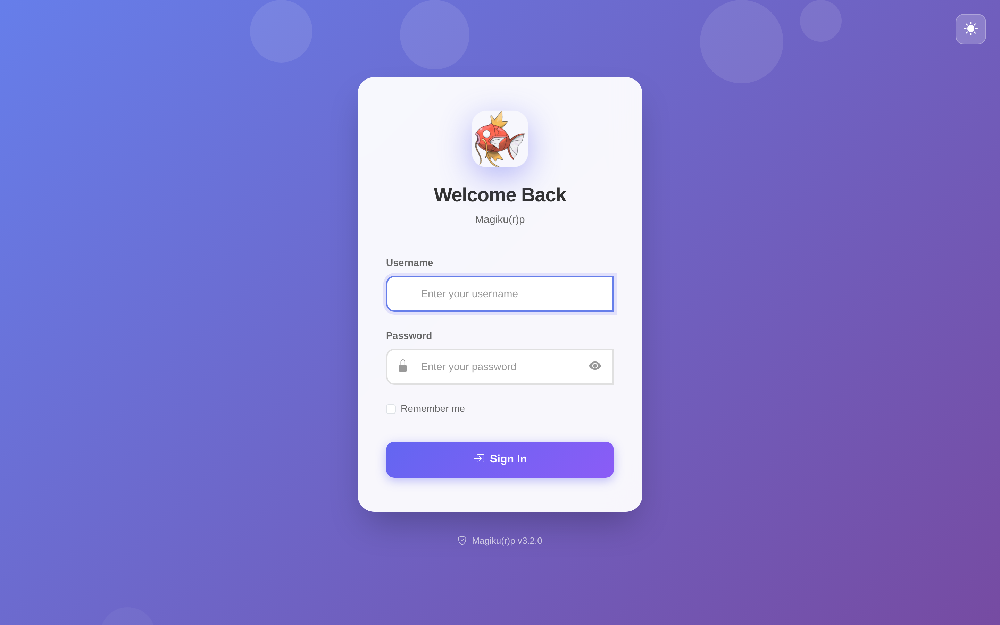
Figura 3.1 — Pagina di Login
Funzionalità della pagina di login:
- Visibilità password — Cliccare l’icona occhio per mostrare/nascondere la password
- Ricordami — Checkbox per sessioni persistenti
- Tema — Toggle in alto a destra per passare da tema chiaro a scuro
L’applicazione supporta un tema scuro, attivabile dal toggle in alto a destra:
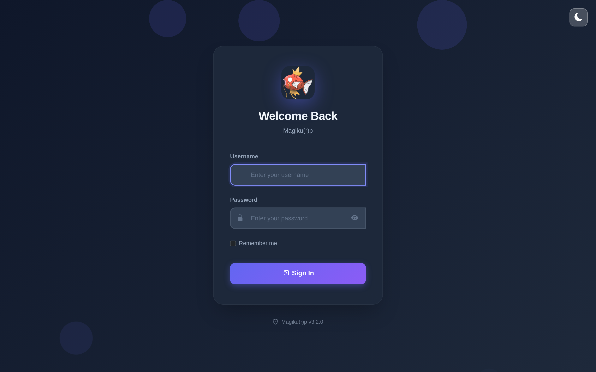
Figura 3.3 — Pagina di Login in Tema Scuro
Dopo il login, il menu utente mostra il ruolo e le opzioni disponibili:
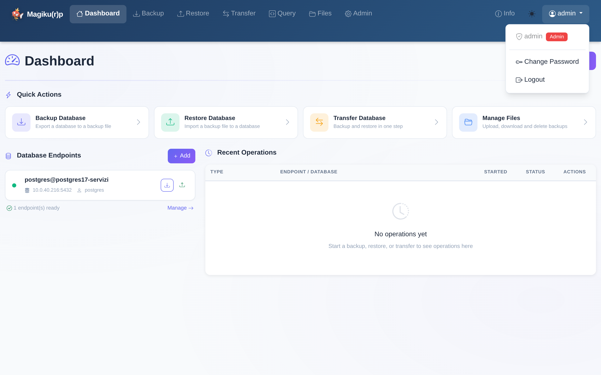
Figura 3.4 — Menu Utente con Badge Ruolo
3.2 Ruoli Utente
L’applicazione supporta tre ruoli con livelli crescenti di permessi:
| Ruolo | Descrizione | Badge |
|---|
| Viewer |
Accesso in sola lettura: può visualizzare dashboard, endpoint e operazioni. Non può scaricare backup né eseguire operazioni. |
Grigio |
| Operator |
Può eseguire backup, restore, transfer, query SQL e tunnel SSM usando le credenziali memorizzate dell’endpoint. Può gestire i file. Non può accedere al pannello admin. |
Blu |
| Admin |
Accesso completo: gestione utenti, endpoint, configurazione, operazioni |
Rosso |
3.3 Matrice Permessi
| Funzionalità | Admin | Operator | Viewer |
|---|
| Visualizzare Dashboard | ✓ | ✓ | ✓ |
| Visualizzare endpoint e operazioni | ✓ | ✓ | ✓ |
| Scaricare file di backup | ✓ | ✓ | ✗ |
| Cambiare la propria password | ✓ | ✓ | ✓ |
| Eseguire backup/restore/transfer | ✓ | ✓ | ✗ |
| Utilizzare il Query Editor | ✓ | ✓ | ✗ |
| Caricare/eliminare file | ✓ | ✓ | ✗ |
| Avviare/fermare tunnel SSM | ✓ | ✓ | ✗ |
| Annullare operazioni | ✓ | ✓ | ✗ |
| Pannello Amministrazione | ✓ | ✗ | ✗ |
| Gestire utenti | ✓ | ✗ | ✗ |
| Configurare endpoint/jumphost | ✓ | ✗ | ✗ |
| Import/export configurazione | ✓ | ✗ | ✗ |
| Cancellare storico operazioni | ✓ | ✗ | ✗ |
| Accesso agli endpoint | Tutti | Lista assegnata* | Lista assegnata* |
* Scoping degli endpoint per utente. Ogni utente non-admin ha una lista di endpoint consentiti (predefinito: tutti). La si imposta in Admin > Users (campo “Allowed endpoints”, nomi separati da virgola; vuoto o * = tutti). Un utente con scope ristretto vede e può operare solo sui propri endpoint; gli altri restituiscono 403. Gli Admin hanno sempre accesso a tutti gli endpoint.
Endpoint in sola lettura (read-only)
Un endpoint può essere contrassegnato come Read-only in Admin > Endpoints. In tal caso:
- Il Query Editor si connette in modalità sola lettura (
default_transaction_read_only=on): ogni istruzione di scrittura viene rifiutata da PostgreSQL stesso.
- Restore e transfer verso quell’endpoint sono rifiutati.
- I backup (che leggono soltanto) continuano a funzionare.
Utile per esporre database di produzione a query sicure senza rischio di scritture accidentali.
3.4 Cambio Password
Ogni utente può cambiare la propria password dal menu utente in alto a destra → “Change Password”.
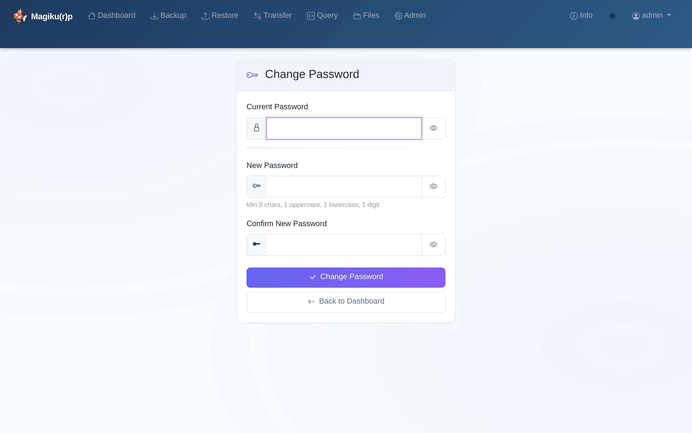
Figura 3.2 — Pagina Cambio Password
Policy password:
- Minimo 8 caratteri
- Almeno 1 lettera maiuscola
- Almeno 1 lettera minuscola
- Almeno 1 cifra numerica
3.5 Sicurezza: Rate Limiting e Lockout
Rate Limiting (per IP)
Dopo 5 tentativi di login falliti dallo stesso indirizzo IP, l’accesso viene bloccato per 5 minuti. Viene mostrato un messaggio che indica il tempo rimanente.
Account Lockout (per utente)
Dopo 10 tentativi di login falliti per lo stesso username, l’account viene bloccato. Solo un amministratore può sbloccarlo dal pannello Admin → Users.
Audit Log
Tutti gli eventi di sicurezza vengono registrati:
- Login riusciti e falliti
- Cambio password
- Creazione/modifica/eliminazione utenti
- Blocco e sblocco account
4. Dashboard
La Dashboard è la pagina principale dell’applicazione. Offre una panoramica dello stato del sistema e accesso rapido alle funzionalità.
Figura 4.1 — Dashboard
4.1 Quick Actions
La sezione Quick Actions (visibile solo per Admin e Operator) mostra 4 card cliccabili:
| Azione | Descrizione | Collegamento |
|---|
| Backup Database | Avvia un nuovo backup | Pagina Backup |
| Restore Database | Ripristina un backup | Pagina Restore |
| Transfer Database | Copia tra database | Pagina Transfer |
| Manage Files | Gestisci file di backup | Pagina Files |
Nota: Gli utenti Viewer vedono un banner informativo al posto delle Quick Actions.
La dashboard in tema scuro:
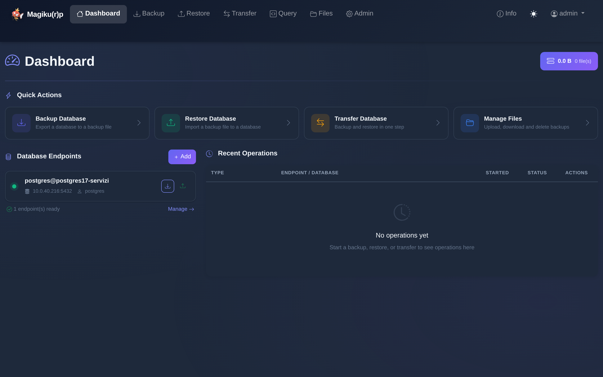
Figura 4.3 — Dashboard in Tema Scuro
4.2 Endpoint Database
La colonna sinistra mostra tutti gli endpoint configurati. Per ogni endpoint vengono visualizzati:
- Nome dell’endpoint
- Host e porta
- Username di connessione
- Pulsanti rapidi Backup e Restore (non visibili ai Viewer)
4.3 Operazioni Recenti
La colonna destra mostra lo storico delle operazioni con:
- Tipo — Badge colorato: Backup (blu), Restore (verde), Transfer (arancio)
- Endpoint/Database — Target dell’operazione
- Ora inizio — Timestamp
- Stato — Running (spinner), Success (verde), Failed (rosso), Cancelled (grigio)
- Azioni — Watch Live, View Log, Download Log, Cancel
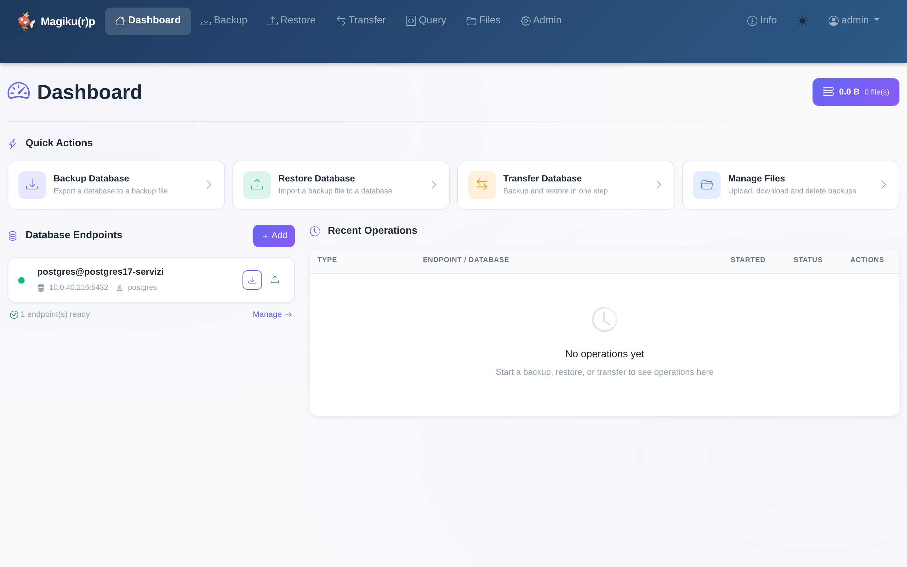
Figura 4.2 — Operazioni Recenti
4.4 Console Live
Cliccando “Watch Live” su un’operazione in corso si apre un modale con l’output in tempo reale via WebSocket.
Nota: La console live si apre in un modale a schermo intero con sfondo scuro e font monospace, mostrando l’output riga per riga in tempo reale.
5. Backup
La pagina Backup permette di eseguire backup di database PostgreSQL.
Accessibile solo a Admin e Operator.
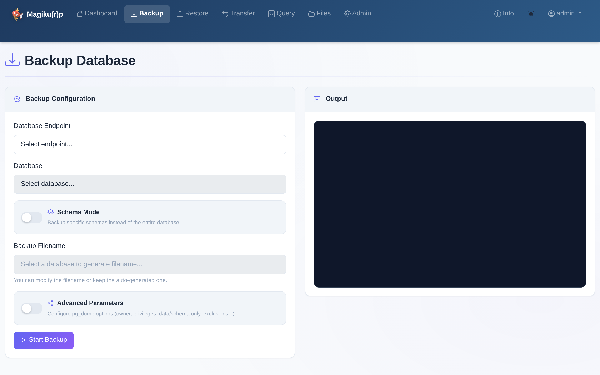
Figura 5.1 — Pagina Backup
5.1 Backup Completo
Selezionare l’Endpoint dal menu a tendina. Se l’endpoint usa SSM, verrà mostrato un badge informativo.
Selezionare il Database dal menu a tendina (viene caricato automaticamente dall’endpoint).
Verificare il nome file generato automaticamente (formato: database_YYYYMMDD_HHMMSS.backup). È modificabile.
Configurare le opzioni se necessario (vedi sezione 5.3).
Cliccare “Start Backup”.
Monitorare l’output in tempo reale nella console a destra.
Al termine, un banner di successo mostra il percorso e la dimensione del file.
5.2 Backup per Schema
Per eseguire il backup di schema specifici invece dell’intero database:
Selezionare endpoint e database come per il backup completo.
Attivare il toggle “Schema Mode”.
Selezionare uno o più schema cliccando sui chip che appaiono. Ogni chip mostra il nome dello schema e può essere selezionato/deselezionato con un click.
Usare i pulsanti “Select All” e “Clear” per selezione rapida.
Cliccare “Start Backup”.
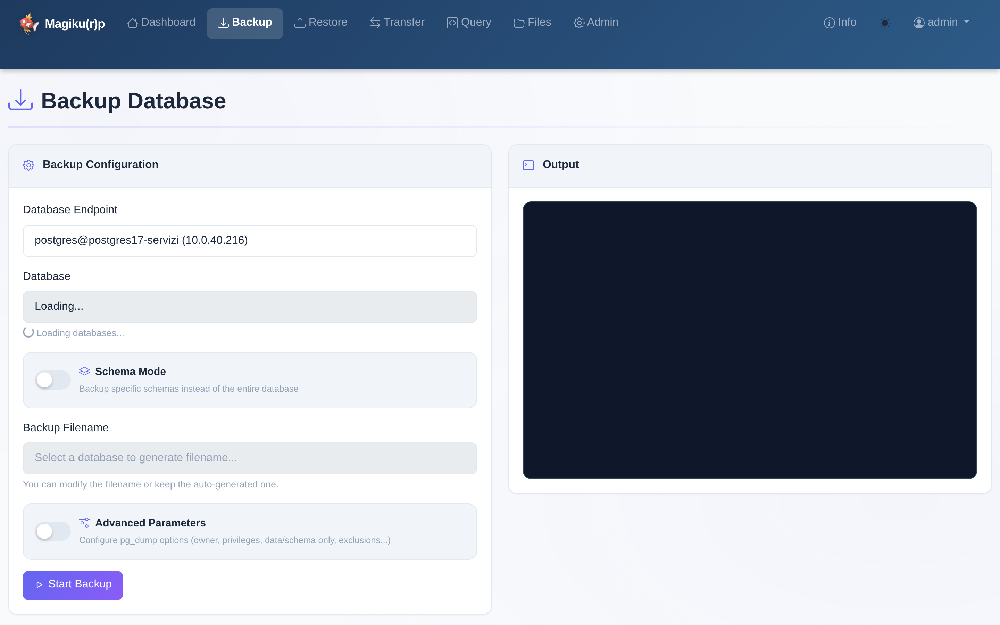
Figura 5.2 — Backup con Endpoint e Database Selezionati
5.3 Parametri Avanzati
La pagina Backup include un toggle “Advanced Parameters” che, una volta attivato,
mostra un pannello con parametri avanzati di pg_dump. Ogni parametro è accompagnato
da un’icona tooltip (?) che ne spiega la funzione in dettaglio.
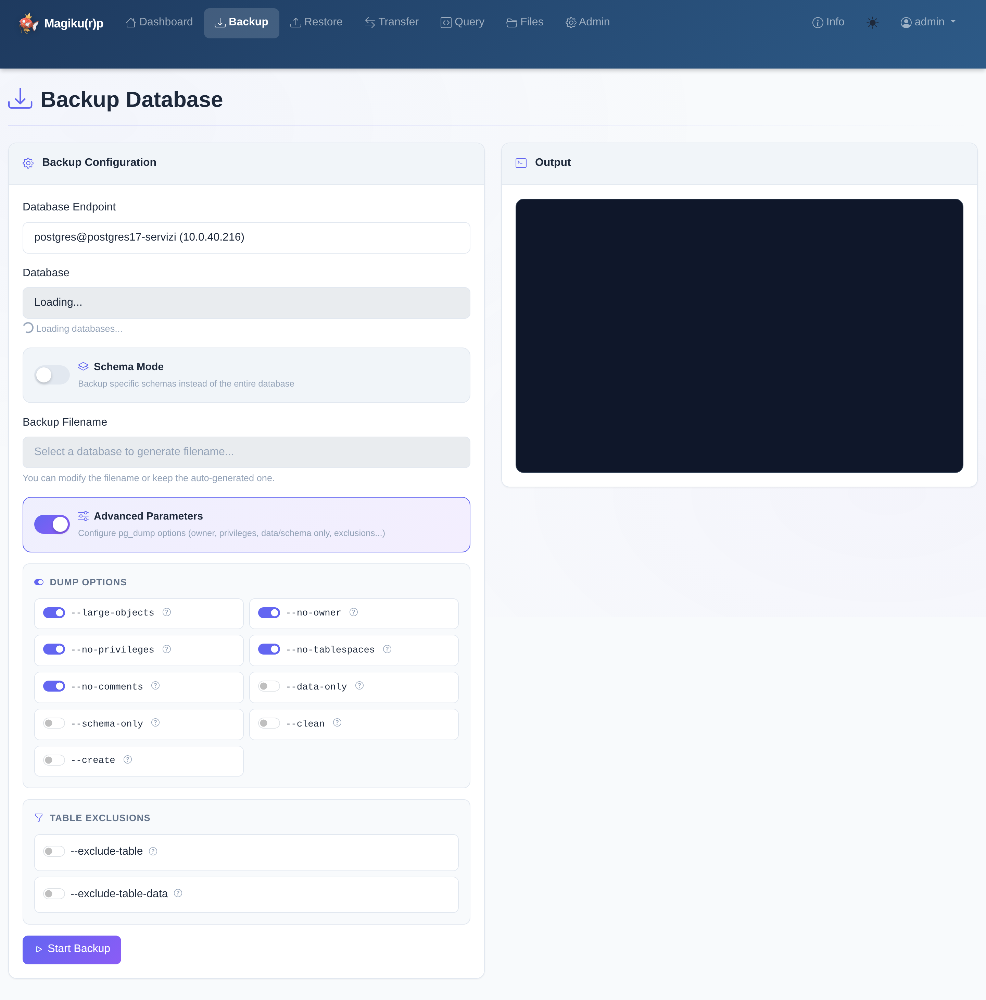
Figura 5.3 — Pannello Parametri Avanzati
Opzioni di Dump
| Parametro | Default | Descrizione |
|---|
--large-objects | Attivo | Include i large object (BLOB) nel dump. Disattivare per ridurre la dimensione del backup. |
--no-owner | Attivo | Non emette comandi per impostare la proprietà degli oggetti. Gli oggetti ripristinati saranno di proprietà dell’utente che esegue il restore. |
--no-privileges | Attivo | Non include comandi GRANT/REVOKE per impostare i privilegi di accesso. |
--no-tablespaces | Attivo | Non emette comandi per impostare i tablespace. Tutti gli oggetti verranno ripristinati nel tablespace predefinito. |
--no-comments | Attivo | Non include comandi COMMENT. Utile per ridurre la dimensione del dump. |
--data-only | Disattivo | Esporta solo i dati, non lo schema (DDL). Mutuamente esclusivo con --schema-only. |
--schema-only | Disattivo | Esporta solo le definizioni degli oggetti (DDL), non i dati. Mutuamente esclusivo con --data-only. |
--clean | Disattivo | Aggiunge comandi DROP prima dei CREATE nel dump. Con il formato custom, questo ha effetto solo durante il restore. |
--create | Disattivo | Include il comando CREATE DATABASE nel dump. Se combinato con --clean, aggiunge anche DROP DATABASE. |
Attenzione: --data-only e --schema-only sono mutuamente esclusivi.
L’interfaccia impedisce di attivarli entrambi contemporaneamente.
Esclusione Tabelle
Due parametri aggiuntivi permettono di escludere tabelle specifiche dal backup tramite pattern glob:
| Parametro | Descrizione |
|---|
--exclude-table | Esclude completamente (struttura e dati) le tabelle che corrispondono al pattern. Esempio: public.temp_* esclude tutte le tabelle che iniziano con temp_ nello schema public. |
--exclude-table-data | Esclude solo i dati (mantiene la struttura DDL) delle tabelle che corrispondono al pattern. Utile per tabelle di audit/log molto grandi. |
Quando si abilita uno di questi toggle, appare un campo di testo dove specificare il pattern.
I pattern supportano i caratteri wildcard * e ? e vengono validati
contro caratteri potenzialmente pericolosi.
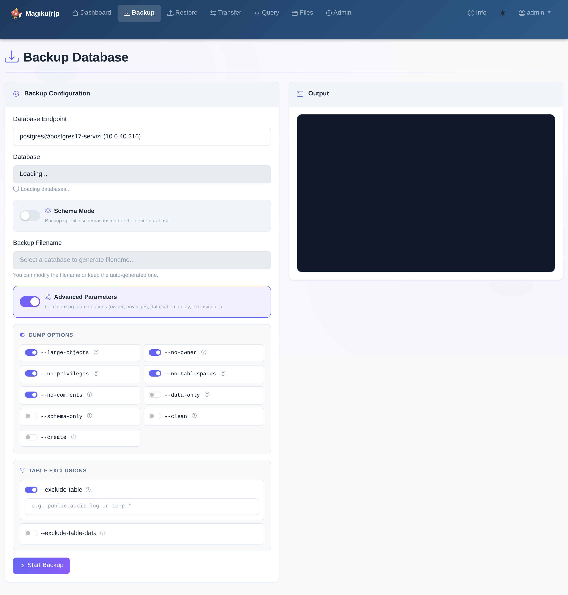
Figura 5.4 — Esclusione Tabelle con Pattern
Suggerimento: Le opzioni --no-owner, --no-privileges e --no-tablespaces
sono consigliate quando si ripristina su un server diverso dall’originale, dove utenti, ruoli e tablespace potrebbero non esistere.
6. Restore
La pagina Restore permette di ripristinare un database da un file di backup.
Accessibile solo a Admin e Operator.
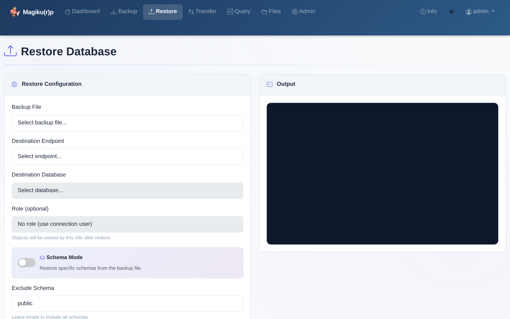
Figura 6.1 — Pagina Restore
6.1 Restore Completo
Selezionare il file di backup dal menu a tendina. Mostra nome, dimensione e data.
Selezionare l’Endpoint di destinazione.
Selezionare il Database di destinazione.
(Opzionale) Selezionare un Ruolo per il remapping dell’ownership degli oggetti.
(Opzionale) Configurare l’Exclude Schema (default: public) per escludere schema specifici dal restore.
(Opzionale) Attivare il toggle “Advanced Parameters” per configurare le opzioni avanzate di pg_restore (vedi sezione 6.3).
Cliccare “Start Restore”.
Attenzione: L’opzione “Clean” elimina gli oggetti esistenti nel database di destinazione prima del ripristino. Assicurarsi di selezionare il database corretto.
6.2 Restore per Schema
Per ripristinare solo schema specifici:
Selezionare file di backup, endpoint e database.
Attivare il toggle “Schema Mode”.
Selezionare gli schema da ripristinare usando i chip.
Cliccare “Start Restore”.
Nota: In modalità schema, le opzioni cambiano: il campo “Exclude Schema” non è disponibile.
6.3 Parametri Avanzati
La pagina Restore include un toggle “Advanced Parameters” che, una volta attivato,
mostra un pannello con parametri avanzati di pg_restore. Ogni parametro è accompagnato
da un’icona tooltip (?) che ne spiega la funzione in dettaglio.
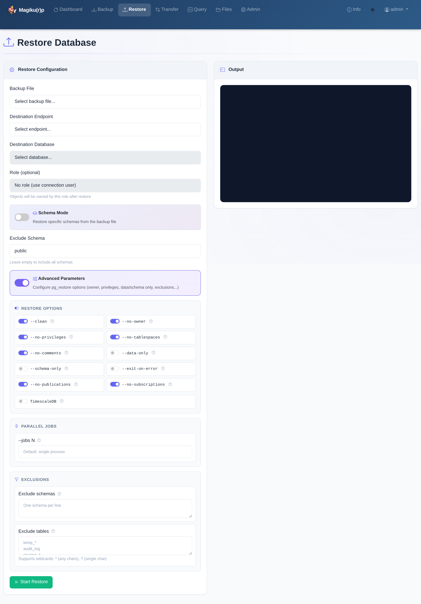
Figura 6.2 — Pannello Parametri Avanzati Restore
Opzioni di Restore
| Parametro | Default | Descrizione |
|---|
--clean | Attivo | Elimina gli oggetti esistenti prima di ricrearli. Usa --if-exists per evitare errori se gli oggetti non esistono. |
--no-owner | Attivo | Non esegue comandi per impostare la proprietà degli oggetti. Gli oggetti saranno di proprietà dell’utente di connessione. |
--no-privileges | Attivo | Non ripristina i comandi GRANT/REVOKE per i privilegi di accesso. |
--no-tablespaces | Attivo | Non ripristina le assegnazioni di tablespace. Tutti gli oggetti verranno ripristinati nel tablespace predefinito. |
--no-comments | Attivo | Non ripristina i commenti sugli oggetti. Riduce il rumore durante il restore. |
--data-only | Disattivo | Ripristina solo i dati, non lo schema (DDL). Le tabelle devono già esistere nel database di destinazione. Mutuamente esclusivo con --schema-only. |
--schema-only | Disattivo | Ripristina solo le definizioni degli oggetti (DDL), non i dati. Mutuamente esclusivo con --data-only. |
--exit-on-error | Disattivo | Termina immediatamente al primo errore invece di continuare. Per default pg_restore prosegue dopo gli errori. |
--no-publications | Attivo | Non ripristina le definizioni di pubblicazione. Utile quando si ripristina su un server che non deve replicare dati. |
--no-subscriptions | Attivo | Non ripristina le definizioni di sottoscrizione. Impedisce al database ripristinato di tentare connessioni ai publisher. |
TimescaleDB | Disattivo | Attiva il flusso di restore per database TimescaleDB: esegue timescaledb_pre_restore(), aggiunge --disable-triggers a pg_restore e invoca timescaledb_post_restore() al termine. Vedi sezione 6.5. |
Attenzione: --data-only e --schema-only sono mutuamente esclusivi.
L’interfaccia impedisce di attivarli entrambi contemporaneamente.
Parallel Jobs
Il parametro --jobs N permette di eseguire il restore usando N processi paralleli (da 1 a 8).
Questo può accelerare significativamente il ripristino di database di grandi dimensioni su server multi-core.
Nota: L’uso di --jobs è incompatibile con --single-transaction.
Esclusioni
Due aree di testo nella sezione Exclusions permettono di escludere schema e tabelle dal restore:
| Campo | Descrizione |
|---|
| Exclude schemas | Uno schema per riga. Ogni valore viene passato come --exclude-schema a pg_restore. |
| Exclude tables | Un pattern per riga. Supporta wildcard * (qualsiasi carattere) e ? (singolo carattere). |
L’esclusione tabelle utilizza il filtraggio TOC (Table of Contents): pg_restore esegue --list per ottenere
l’elenco degli oggetti nel backup, le voci corrispondenti ai pattern vengono commentate, e il file filtrato viene passato con --use-list.
Questo approccio è necessario perché pg_restore non dispone di un flag nativo --exclude-table.
Suggerimento: Le opzioni --no-owner, --no-privileges e --no-tablespaces
sono consigliate quando si ripristina su un server diverso dall’originale, dove utenti, ruoli e tablespace potrebbero non esistere.
6.4 Role Mapping
Il campo “Role” permette di assegnare l’ownership di tutti gli oggetti ripristinati a un ruolo specifico del database di destinazione.
Il menu a tendina elenca i ruoli disponibili sull’endpoint selezionato, evidenziando i superuser.
Se non si seleziona un ruolo, pg_restore userà l’utente di connessione dell’endpoint.
6.5 Restore TimescaleDB
Nella sezione Advanced Parameters è disponibile il toggle TimescaleDB.
Quando attivo, il restore viene adattato alle specifiche di un database con estensione
timescaledb installata, seguendo la procedura ufficiale TimescaleDB.
Flusso attivato dal toggle:
- L’applicazione si connette al database di destinazione ed esegue
SELECT timescaledb_pre_restore(); — disabilita temporaneamente i background worker e rimuove le restrizioni sugli hypertable.
- Viene eseguito
pg_restore aggiungendo il flag --disable-triggers (utile per evitare l’esecuzione di trigger di integrità referenziale durante il caricamento dati).
- Al termine del restore, viene eseguito
SELECT timescaledb_post_restore(); — ripristina le protezioni e riattiva i background worker.
Prerequisiti
- Il database di destinazione deve già avere l’estensione
timescaledb installata (CREATE EXTENSION IF NOT EXISTS timescaledb;).
- L’utente di connessione deve avere privilegi di superuser (richiesto sia da
timescaledb_pre_restore() sia da --disable-triggers).
- La versione di TimescaleDB sul target deve essere uguale o superiore a quella sorgente.
Gestione errori
| Errore | Comportamento |
|---|
timescaledb_pre_restore() fallisce
(estensione mancante, utente non superuser) |
Il restore viene abortito prima di eseguire pg_restore. Lo stato finale è failed con il messaggio d’errore originale. |
pg_restore fallisce |
Errore riportato normalmente. timescaledb_post_restore() viene comunque tentata per riattivare i worker. |
timescaledb_post_restore() fallisce |
Lo stato dell’operazione viene marcato come failed anche se pg_restore è terminato correttamente, perché il database resta in stato inconsistente (background worker non riattivati). |
Il toggle TimescaleDB è disponibile anche nella sezione Advanced Parameters della fase Restore
della pagina Transfer, consentendo di attivare lo stesso flusso in operazioni di trasferimento completo.
7. Transfer
La pagina Transfer esegue un trasferimento completo tra due database in un’unica operazione (backup → restore).
Accessibile solo a Admin e Operator.
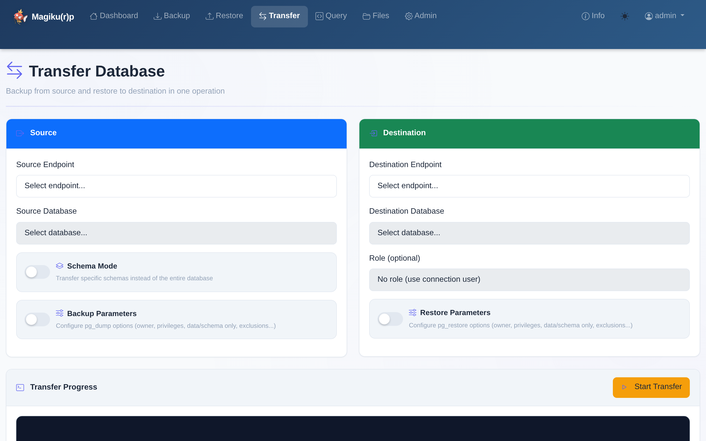
Figura 7.1 — Pagina Transfer
7.1 Trasferimento Database
Nella card Source (blu), selezionare endpoint e database sorgente.
(Opzionale) Attivare Schema Mode e selezionare gli schema da trasferire.
Nella card Destination (verde), selezionare endpoint e database di destinazione.
(Opzionale) Selezionare un ruolo per il remapping ownership.
Cliccare “Start Transfer”.
7.2 Monitoraggio Fasi
Il transfer procede in due fasi, visualizzate con un indicatore di progresso:
| Fase | Indicatore | Descrizione |
|---|
| 1. Backup | Cerchio blu attivo | Backup dal database sorgente |
| Transizione | Freccia tra le due fasi | Preparazione per il restore |
| 2. Restore | Cerchio verde attivo | Restore sul database di destinazione |
L’output nella console è prefissato con [BACKUP] e [RESTORE] per distinguere le due fasi.
Nota: Durante il transfer, l’indicatore di fase si aggiorna automaticamente: il cerchio “Backup” diventa verde al completamento, poi il cerchio “Restore” diventa attivo.
7.3 Parametri Avanzati
La pagina Transfer include due pannelli di parametri avanzati indipendenti, uno per la fase di backup e uno per la fase di restore.
Ogni pannello si attiva tramite il proprio toggle “Advanced Parameters” nella card corrispondente.
Parametri Backup (Source)
Nella card Source (blu), il toggle “Backup Advanced Parameters” mostra le stesse opzioni
di pg_dump disponibili nella pagina Backup dedicata (vedi sezione 5.3):
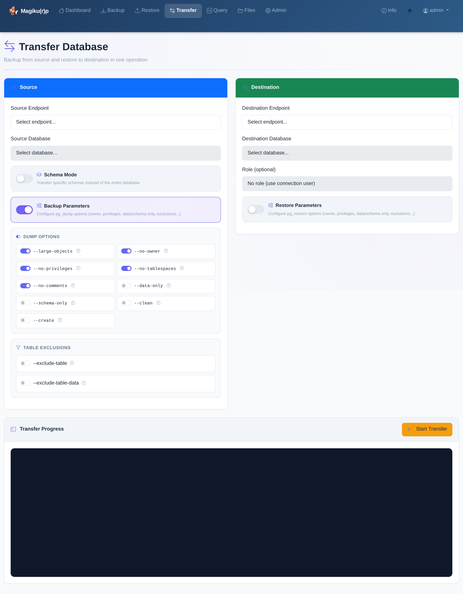
Figura 7.2 — Parametri Avanzati Backup nella pagina Transfer
| Parametro | Default | Descrizione |
|---|
--large-objects | Attivo | Include i large object (BLOB) nel dump. |
--no-owner | Attivo | Non emette comandi per impostare la proprietà degli oggetti. |
--no-privileges | Attivo | Non include comandi GRANT/REVOKE. |
--no-tablespaces | Attivo | Non emette comandi per impostare i tablespace. |
--no-comments | Attivo | Non include comandi COMMENT. |
--data-only | Disattivo | Esporta solo i dati. Mutuamente esclusivo con --schema-only. |
--schema-only | Disattivo | Esporta solo le definizioni DDL. Mutuamente esclusivo con --data-only. |
--clean | Disattivo | Aggiunge comandi DROP prima dei CREATE. |
--create | Disattivo | Include il comando CREATE DATABASE nel dump. |
Sono disponibili anche le opzioni di esclusione tabelle (--exclude-table e --exclude-table-data) con pattern glob.
Parametri Restore (Destination)
Nella card Destination (verde), il toggle “Restore Advanced Parameters” mostra le stesse opzioni
di pg_restore disponibili nella pagina Restore dedicata (vedi sezione 6.3):
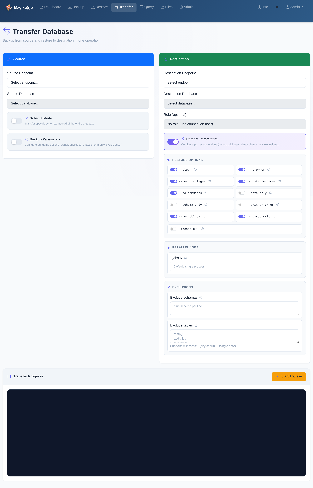
Figura 7.3 — Parametri Avanzati Restore nella pagina Transfer
| Parametro | Default | Descrizione |
|---|
--clean | Attivo | Elimina gli oggetti esistenti prima di ricrearli. |
--no-owner | Attivo | Non esegue comandi per impostare la proprietà degli oggetti. |
--no-privileges | Attivo | Non ripristina i comandi GRANT/REVOKE. |
--no-tablespaces | Attivo | Non ripristina le assegnazioni di tablespace. |
--no-comments | Attivo | Non ripristina i commenti sugli oggetti. |
--data-only | Disattivo | Ripristina solo i dati. Mutuamente esclusivo con --schema-only. |
--schema-only | Disattivo | Ripristina solo le definizioni DDL. Mutuamente esclusivo con --data-only. |
--exit-on-error | Disattivo | Termina immediatamente al primo errore. |
--no-publications | Attivo | Non ripristina le definizioni di pubblicazione. |
--no-subscriptions | Attivo | Non ripristina le definizioni di sottoscrizione. |
Sono disponibili anche il campo Parallel Jobs (--jobs N, da 1 a 8) e le aree di testo
per escludere schema e tabelle dal restore.
Suggerimento: I parametri avanzati del transfer sono indipendenti tra loro: è possibile configurare
opzioni diverse per la fase di backup e per la fase di restore nella stessa operazione.
Per una descrizione dettagliata di ciascun parametro, fare riferimento alle sezioni
5.3 (backup) e
6.3 (restore).
8. Query Editor
Il Query Editor permette di eseguire query SQL direttamente su qualsiasi endpoint configurato.
Accessibile dalla barra di navigazione (Query), offre un ambiente di sviluppo SQL completo
con editor avanzato, browser degli oggetti e visualizzazione dei risultati.
Nota: Il Query Editor è accessibile solo agli utenti con ruolo
Operator o Admin.
8.1 Interfaccia
L’interfaccia è composta da tre pannelli ridimensionabili:
- Barra di connessione (in alto) — Selezione endpoint, database, ruolo, timeout e limite righe
- Object Browser (a sinistra) — Albero navigabile degli oggetti del database
- Editor SQL + Risultati (a destra) — Editor di codice, toolbar con pulsanti e tabella dei risultati
La toolbar dell’editor include i pulsanti Run, Clear, Export CSV,
il toggle Autocommit e il pulsante History. Tutti gli elementi della toolbar
dispongono di tooltip esplicativi: passando il mouse sopra ciascun pulsante o toggle viene
mostrata una descrizione della sua funzione.
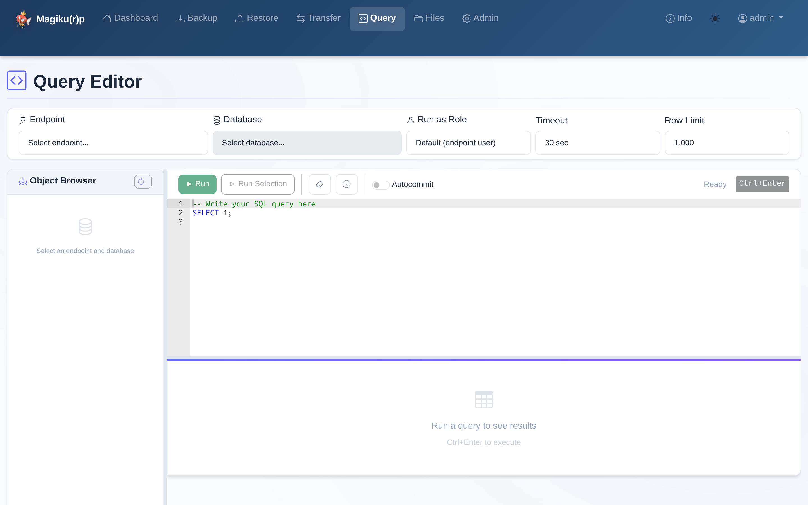
Figura 8.1 — Query Editor
8.2 Connessione
Per iniziare, selezionare un Endpoint dalla barra di connessione. Il sistema carica automaticamente
la lista dei database disponibili. Selezionare quindi il Database desiderato.
Opzioni aggiuntive:
| Campo | Descrizione |
|---|
| Run as Role | Esegui le query con un ruolo PostgreSQL diverso (opzionale). Utilizza SET ROLE. |
| Timeout | Timeout massimo per l’esecuzione della query (5-300 secondi). Imposta statement_timeout lato server. |
| Row Limit | Numero massimo di righe restituite (100-10.000). |
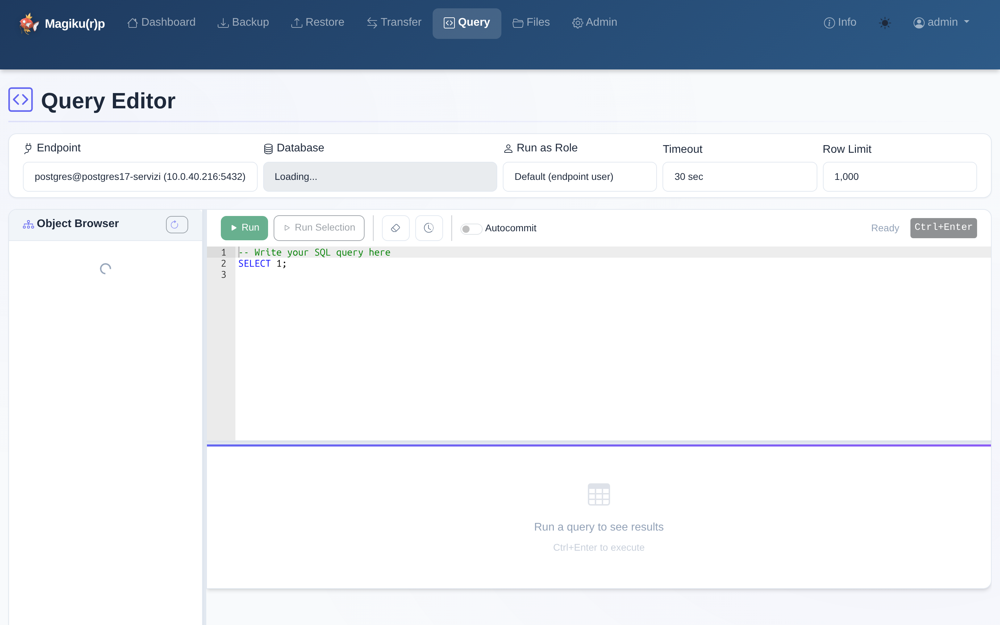
Figura 8.2 — Query Editor con endpoint connesso
8.3 Object Browser
Il pannello laterale mostra la struttura del database in un albero espandibile:
- Schemas — Elenco degli schemi del database
- Tables — Tabelle con dimensione e numero stimato di righe
- Views — Viste del database
- Functions — Funzioni e procedure
- Indexes — Indici con tipo e definizione
Doppio clic su una tabella o vista inserisce automaticamente una query SELECT * FROM schema.tabella LIMIT 100; nell’editor.
8.4 Esecuzione Query
Scrivere la query nell’editor SQL e premere il pulsante Run ()
o la scorciatoia Ctrl+Enter (Cmd+Enter su Mac).
I risultati vengono visualizzati nella tabella sottostante con:
- Intestazioni sticky (visibili durante lo scroll)
- Numero di righe e tempo di esecuzione
- Valori
NULL evidenziati in grigio corsivo
- Badge “TRUNCATED” se il risultato supera il limite righe
Suggerimento: Selezionare una porzione di testo nell’editor ed eseguire: verrà eseguita
solo la parte selezionata. Utile per eseguire una singola query in un file con più istruzioni.
8.5 Funzionalità Aggiuntive
| Funzione | Descrizione |
|---|
| Autocommit | Toggle nella toolbar, accanto al pulsante History. Quando è ON: ogni istruzione SQL viene eseguita e committata immediatamente (senza transazione esplicita). Quando è OFF: le query vengono eseguite all’interno di una transazione con COMMIT al termine. Il valore predefinito è configurabile nella sezione [query] del file config.ini oppure da Admin → Settings → Query Editor. |
| Export CSV | Esporta i risultati della query in formato CSV |
| Query History | Mostra le ultime 50 query eseguite (salvate nel browser) |
| Clear | Pulisce l’editor SQL |
| Tooltips | Tutti gli elementi della toolbar (pulsanti, toggle, campi) dispongono di tooltip esplicativi: passando il mouse sopra ciascun elemento viene mostrata una descrizione della sua funzione. |
| Dark Mode | L’editor si adatta automaticamente al tema chiaro/scuro |
Attenzione: Le query vengono eseguite con un timeout lato server (statement_timeout).
Se una query supera il timeout impostato, viene automaticamente annullata da PostgreSQL.
Nota: Il toggle Autocommit influisce sul comportamento transazionale delle query.
Con autocommit attivo, ogni istruzione è atomica e non può essere annullata (ROLLBACK).
Con autocommit disattivo, tutte le istruzioni vengono racchiuse in una transazione e committate solo al termine dell’esecuzione completa.
9. Gestione File
La pagina Files permette di gestire i file di backup (.backup).
Accessibile solo a Admin e Operator.
I Viewer possono scaricare file dalla Dashboard ma non accedere a questa pagina.
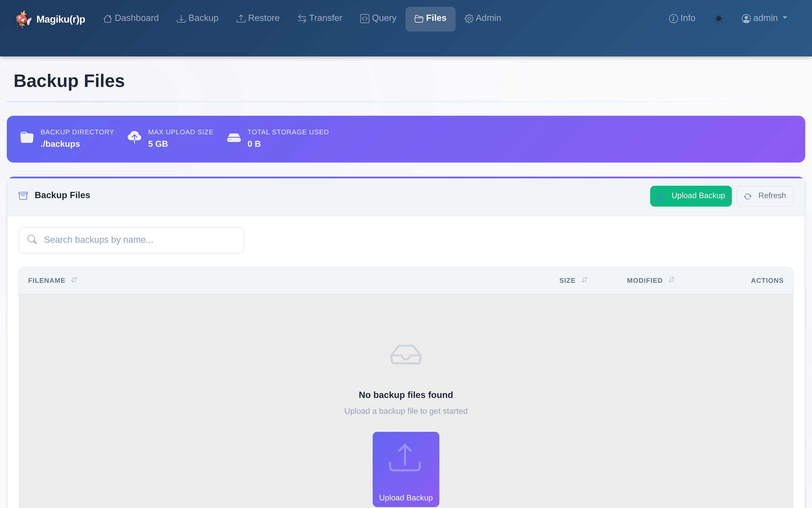
Figura 9.1 — Gestione File
9.1 Upload
Cliccare il pulsante “Upload Backup” (verde).
Selezionare un file con estensione .backup dal proprio computer.
L’upload inizia automaticamente. Una barra di progresso mostra l’avanzamento.
Al termine, il file appare nella lista.
Nota: La dimensione massima di upload è configurabile (default: 5 GB). Verificare l’impostazione in Admin → Settings.
9.2 Download e Cancellazione
Per ogni file nella lista sono disponibili:
- Download (icona freccia giù) — Scarica il file sul proprio computer
- Delete (icona cestino) — Elimina il file con richiesta di conferma
Funzionalità aggiuntive:
- Ricerca — Filtra i file per nome usando il campo di ricerca
- Ordinamento — Clicca sulle intestazioni colonna (Nome, Dimensione, Data) per ordinare
- Refresh — Aggiorna la lista file
10. Amministrazione
Il pannello di Amministrazione è accessibile solo agli utenti Admin.
Contiene 7 sezioni organizzate in tab.
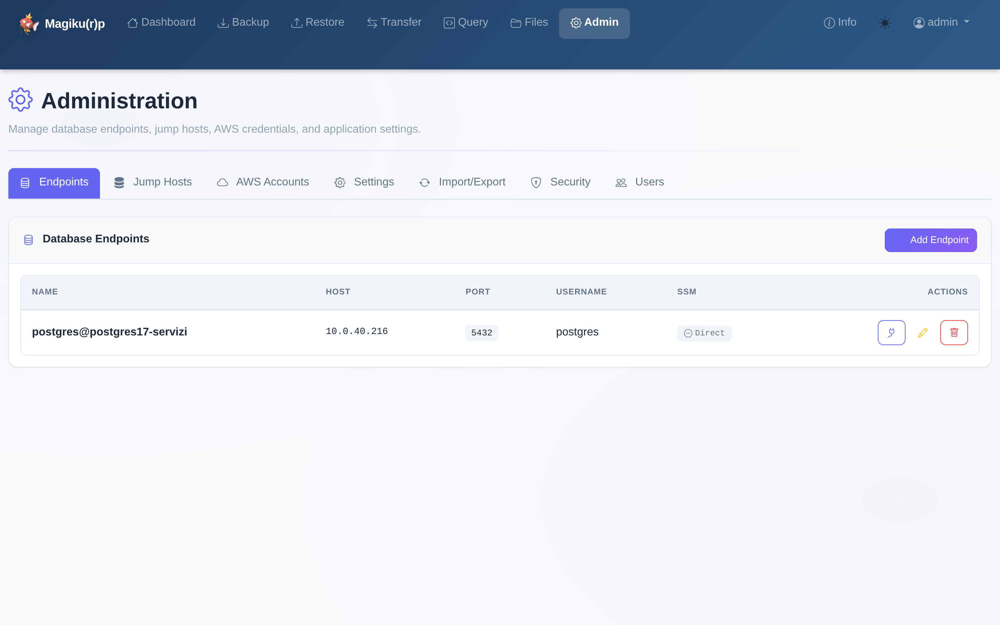
Figura 10.1 — Pannello Amministrazione — Tab Endpoints
10.1 Gestione Endpoint
Il tab Endpoints permette di configurare i database a cui l’applicazione può connettersi.
Aggiungere un Endpoint
Cliccare “Add Endpoint”.
Compilare il form:
- Name — Identificativo univoco (es.
prod-aurora)
- Host — Hostname o IP del database
- Port — Porta (default: 5432)
- Username — Utente PostgreSQL
- Password — Password (verrà cifrata)
- Use SSM Tunnel — Toggle per connessione tramite SSM
- Jump Host — (se SSM attivo) Selezionare il jump host
- Read-only endpoint — Toggle: il Query Editor opera in sola lettura e restore/transfer verso questo endpoint sono rifiutati (vedi 3.3)
Cliccare “Save”.
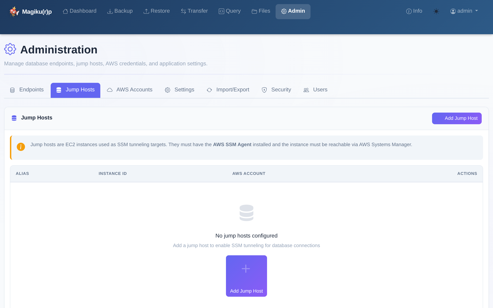
Figura 10.2 — Tab Jump Hosts
Modificare un Endpoint
Nella tabella degli endpoint, cliccare il pulsante Edit (icona matita, giallo) nella riga dell’endpoint da modificare.
Si apre il modal pre-compilato con tutti i dati dell’endpoint. Il campo Name è in sola lettura.
Modificare i campi desiderati (host, porta, username, password, SSM, jump host).
La password è mostrata in chiaro; usare l’icona “occhiolino” per visualizzarla/nasconderla.
Cliccare “Save Changes” per salvare le modifiche.
 Figura 10.1b — Modal di Modifica Endpoint
Figura 10.1b — Modal di Modifica Endpoint
Test Connessione
Per ogni endpoint è disponibile il pulsante “Test Connection” (icona spina) che verifica la connettività al database.
10.2 Jump Host (SSM)
Il tab Jump Hosts permette di configurare le istanze EC2 usate come jump host per i tunnel SSM.
Cliccare “Add Jump Host”.
Compilare:
- Alias — Nome identificativo (es.
production-jh)
- Instance ID — ID dell’istanza EC2 (es.
i-0123456789abcdef0)
- AWS Account — Account AWS associato
Cliccare “Save”.
10.3 Account AWS
Il tab AWS Accounts gestisce le credenziali AWS necessarie per i tunnel SSM.
Cliccare “Add AWS Account”.
Compilare:
- Alias — Nome identificativo
- Access Key ID — AWS Access Key
- Secret Access Key — AWS Secret Key
- Region — Regione AWS (default:
us-east-1)
Cliccare “Save”.
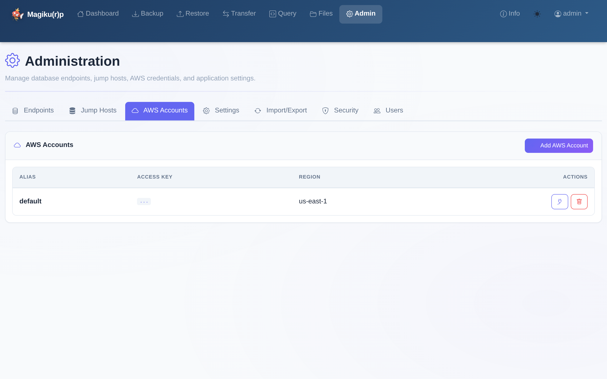
Figura 10.6 — Tab AWS Accounts
10.4 Impostazioni
Il tab Settings permette di configurare i parametri dell’applicazione:
| Sezione | Parametro | Descrizione |
|---|
| Storage | Backup Directory | Percorso della directory backup |
| Max Upload Size (GB) | Dimensione massima upload (1-50 GB) |
| PostgreSQL Tools | pg_dump Path | Percorso eseguibile pg_dump |
| pg_restore Path | Percorso eseguibile pg_restore |
| Query Editor | Default Autocommit | Valore predefinito del toggle Autocommit nel Query Editor (ON/OFF). Corrisponde alla chiave autocommit nella sezione [query] del file config.ini. |
| Logging | Log Level | Livello di log (DEBUG, INFO, WARNING, ERROR) |
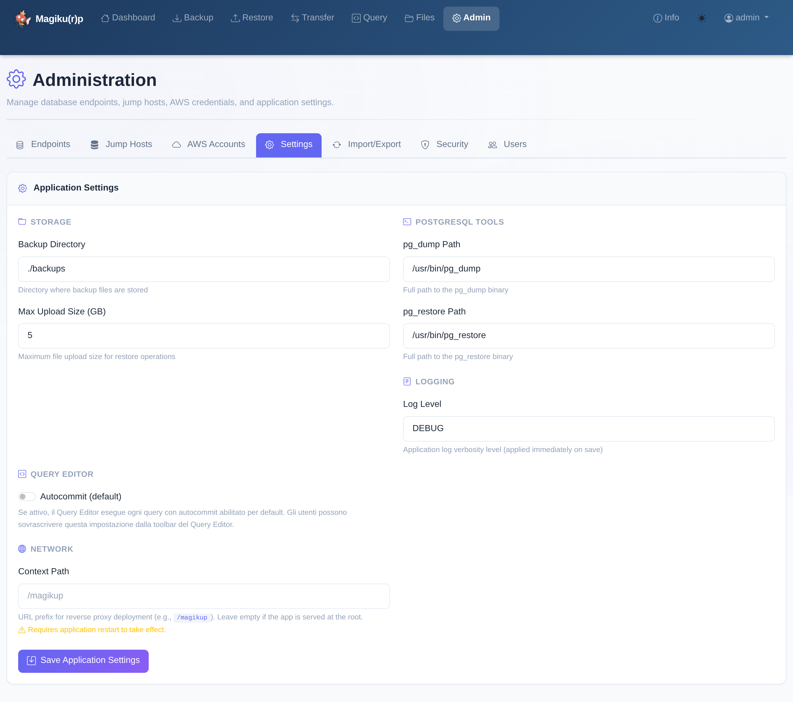
Figura 10.7 — Tab Impostazioni Applicazione
10.5 Import/Export Configurazione
Il tab Import/Export permette di esportare e importare la configurazione completa dell’applicazione.
Export
Cliccare “Download Configuration” per scaricare il file config.ini con tutte le impostazioni, endpoint e jump host.
Import
Attenzione: L’importazione sovrascrive TUTTE le impostazioni correnti, inclusi endpoint e credenziali.
Selezionare il file di configurazione (formati accettati: .ini, .yaml, .yml, .json, .conf).
Cliccare “Import Configuration”.
L’applicazione ricaricherà la configurazione.
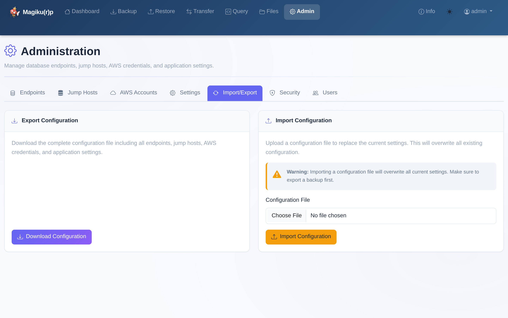
Figura 10.8 — Tab Import/Export Configurazione
10.6 Sicurezza (Cifratura Password)
Il tab Security contiene la funzione di cifratura delle password degli endpoint.
Cliccando “Encrypt Existing Passwords”, tutte le password in chiaro degli endpoint vengono cifrate con Fernet (AES-128). Le password già cifrate (prefisso ENC:) vengono ignorate.
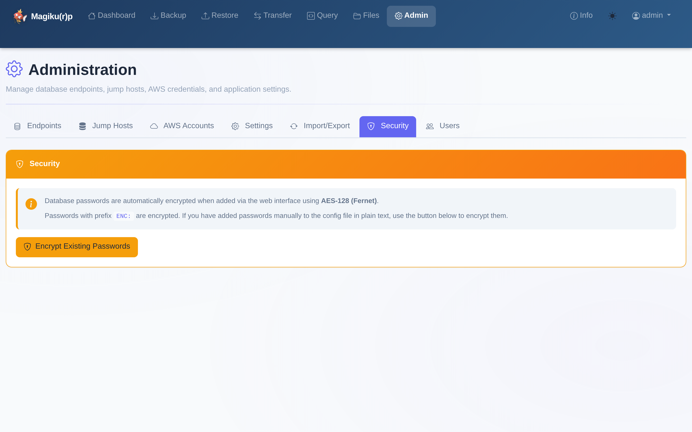
Figura 10.9 — Tab Security — Cifratura Password
10.7 Gestione Utenti
Il tab Users mostra la tabella di tutti gli utenti del sistema.
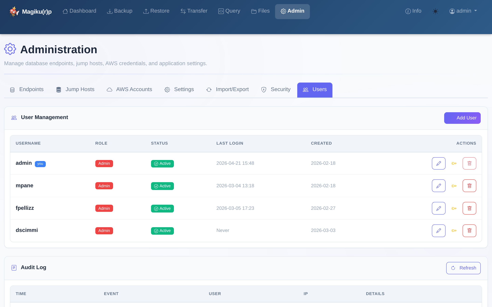
Figura 10.3 — Tab Users — Gestione Utenti
Creare un Nuovo Utente
Cliccare “Add User”.
Compilare:
- Username — Alfanumerico, trattini e underscore (2-50 caratteri)
- Password — Deve rispettare la policy (min 8 caratteri, 1 maiuscola, 1 minuscola, 1 cifra)
- Role — Viewer, Operator o Admin
- Allowed endpoints — Nomi di endpoint separati da virgola a cui l’utente può accedere; vuoto o
* = tutti. Ignorato per gli Admin (sempre tutti). Vedi 3.3.
Cliccare “Create User”.
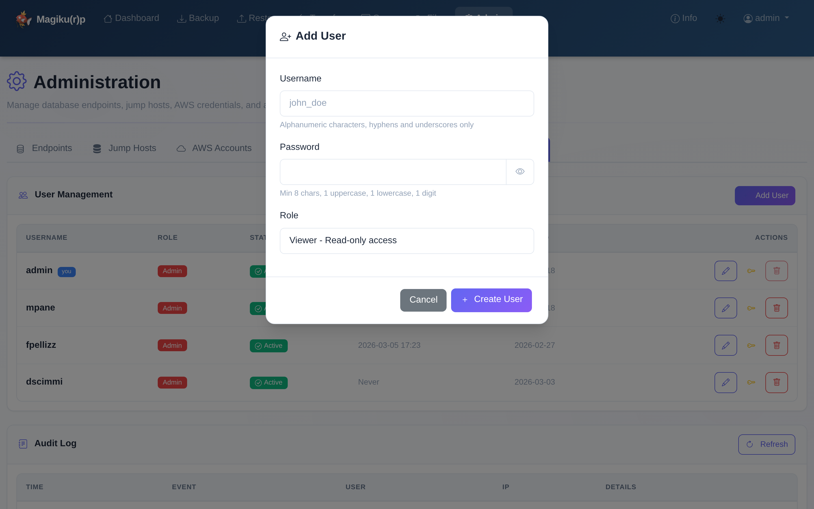
Figura 10.4 — Modale Creazione Utente
Modificare un Utente
Cliccare l’icona matita per modificare ruolo, stato (abilitato/disabilitato) e la lista Allowed endpoints di un utente.
Reset Password
Cliccare l’icona chiave per reimpostare la password di un utente. La nuova password deve rispettare la policy.
Sbloccare Account
Se un account è bloccato (badge giallo “Locked”), cliccare l’icona lucchetto aperto per sbloccarlo.
Eliminare Utente
Cliccare l’icona cestino per eliminare un utente (con conferma).
Il pulsante di eliminazione per il proprio account è sempre visibile ma disabilitato (grigio, non cliccabile),
in modo da rendere chiaro che non è possibile eliminare se stessi.
Non è inoltre possibile eliminare l’ultimo utente Admin.
10.8 Audit Log
Sotto la tabella utenti è presente la sezione Audit Log che mostra tutti gli eventi di sicurezza.
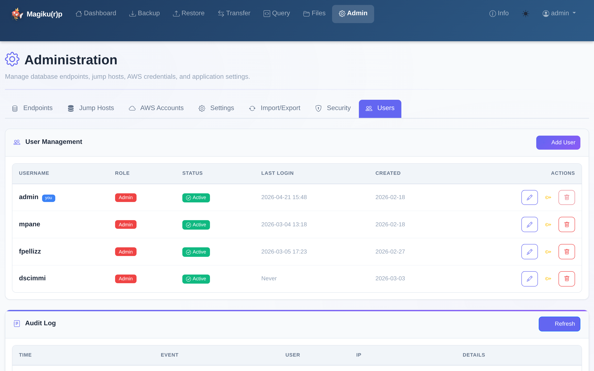
Figura 10.5 — Audit Log
Colonne visualizzate:
| Colonna | Descrizione |
|---|
| Time | Timestamp dell’evento |
| Event | Tipo evento (login_success, login_failed, password_changed, user_created, ecc.) |
| User | Username coinvolto |
| IP | Indirizzo IP del client |
| Details | Dettagli aggiuntivi dell’evento |
Cliccare “Refresh” per aggiornare il log.
10.9 Pagina Info
La pagina Info è accessibile da tutti gli utenti tramite il pulsante
nella barra di navigazione (route: /info).
La vecchia route /about effettua un redirect automatico a /info.
La pagina presenta un layout orizzontale organizzato in card:
Prima riga
- Logo/Versione — Logo dell’applicazione e numero di versione corrente
- Autore/Progetto — Informazioni sull’autore, contatti e link al repository del codice sorgente
- Documentazione — Link al manuale utente:
- Manuale HTML — Si apre in una nuova scheda del browser (route:
/docs/manual)
- Manuale PDF — Download diretto del file PDF (route:
/docs/manual.pdf)
Seconda riga
- Built With — Tecnologie utilizzate per lo sviluppo dell’applicazione
- Version History — Cronologia delle versioni con dettaglio delle funzionalità introdotte
Cronologia Versioni
La card Version History nella pagina Info riporta il changelog dell’applicazione. Di seguito il dettaglio della versione corrente:
Versione 3.4.0
- Lock-wait timeout del backup — Nuova impostazione
lock_wait_timeout_seconds (Admin → Settings, default 60s). pg_dump viene eseguito con --lock-wait-timeout: il backup fallisce subito invece di restare bloccato all’infinito quando non riesce ad acquisire i lock condivisi sulle tabelle (es. dietro una migration o un VACUUM FULL). 0 = attesa infinita
- Backup da replica di lettura — Un endpoint può essere configurato per eseguire il backup da una replica di lettura invece che dal primario. Per gli host Aurora il form rileva il cluster endpoint e suggerisce il reader (
.cluster- → .cluster-ro-); si attiva con uno switch. I lock del dump non impattano il writer. Resta agnostico (sempre pg_dump)
Versione 3.3.0
- Endpoint in sola lettura — Un endpoint può essere marcato read-only: il Query Editor si connette in modalità sola lettura e restore/transfer verso di esso sono rifiutati
- Scoping degli endpoint per utente — Ogni utente non-admin ha una lista di endpoint consentiti; vede e opera solo sui propri
- Hardening di sicurezza — Allowlist dei path di pg_dump/pg_restore, validazione host dei tunnel SSM, controllo CSRF same-origin,
TrustedHostMiddleware, rate-limit/audit consapevoli dei proxy, download backup riservato a operator, scritture atomiche dello user store, conferma dei restore distruttivi, e altro
Versione 3.2.0
- Restore TimescaleDB-aware — Nuovo toggle «TimescaleDB» nella sezione Advanced Parameters di Restore e Transfer. Quando attivo, l’applicazione esegue
SELECT timescaledb_pre_restore() prima del restore, aggiunge --disable-triggers a pg_restore e invoca SELECT timescaledb_post_restore() al termine
- Gestione errori robusta — Se la procedura di pre-restore fallisce (estensione TimescaleDB non installata, utente non superuser, ecc.) il restore viene abortito; se fallisce la post-restore, lo stato finale è riportato come failed anche se
pg_restore è terminato correttamente
Versione 3.1.0
- Context Path / Reverse Proxy — Supporto per il deploy sotto un prefisso URL (es.
/magikup) tramite variabile d’ambiente ROOT_PATH o configurazione context_path in config.ini
- Sezione Network nell’Admin — Gestione del context path direttamente dalla pagina di amministrazione, con avviso di riavvio e indicatore di override da variabile d’ambiente
- Dual-source priority — Il context path può essere configurato sia da variabile d’ambiente (
ROOT_PATH, priorità massima) sia da config.ini, risolvendo il problema del primo avvio
- Manifest Kubernetes aggiornati — Deployment, Ingress e ConfigMap aggiornati con supporto context path ed esempi di configurazione
Versione 3.0.0
- Query Editor — Ambiente di sviluppo SQL completo con editor avanzato e visualizzazione risultati
- Object Browser — Albero navigabile degli oggetti del database (schemi, tabelle, viste, funzioni, indici)
- Cambio ruolo (Run as Role) — Possibilità di eseguire query con un ruolo PostgreSQL diverso tramite
SET ROLE
- Autocommit — Toggle per controllare il comportamento transazionale delle query (commit immediato o transazione esplicita)
- Query History — Storico delle ultime 50 query eseguite, salvato nel browser
- Export CSV — Esportazione dei risultati delle query in formato CSV
- Pagina Info con documentazione — Nuova pagina Info con layout a card orizzontali, link al manuale HTML e download PDF
- Tooltips — Tooltip esplicativi su tutti gli elementi del Query Editor
- Tema chiaro/scuro — Supporto completo per tema Dark e Light in tutte le pagine
11. SSM Tunnel
11.1 Come Funziona
AWS Systems Manager (SSM) permette di creare tunnel di port forwarding attraverso istanze EC2 senza bisogno di accesso SSH diretto.
Questo consente di raggiungere database RDS/Aurora in reti private.
MagikUp Pod ──> SSM Session ──> EC2 Jump Host ──> VPC Network ──> RDS/Aurora
(localhost:15432) (SSM Agent) (db.rds:5432)
Flusso operativo
- L’utente avvia un’operazione su un endpoint con SSM attivo
- L’applicazione apre automaticamente un tunnel SSM attraverso il jump host configurato
- pg_dump/pg_restore si connettono al database attraverso il tunnel
- Se esiste già un tunnel attivo per lo stesso endpoint, viene riutilizzato
- Il tunnel rimane attivo fino alla chiusura manuale o al riavvio del pod
11.2 Configurazione
Prerequisiti
- Credenziali AWS configurate nel tab AWS Accounts con permessi
ssm:StartSession
- Istanza EC2 con SSM Agent attivo e in stato “Online”
- Rete: il jump host deve poter raggiungere il database target (security group, routing)
Passi di configurazione
In Admin → AWS Accounts: aggiungere le credenziali AWS e verificare con “Test Connection”.
In Admin → Jump Hosts: aggiungere il jump host EC2 con Instance ID e account AWS associato.
In Admin → Endpoints: creare l’endpoint con “Use SSM Tunnel” attivo e selezionare il jump host.
Testare la connessione con il pulsante “Test Connection” sull’endpoint.
Suggerimento: Nella dashboard, gli endpoint con SSM attivo mostrano un badge blu “SSM”. Nella pagina Backup/Restore/Transfer, un banner informativo mostra il jump host in uso.
12. Troubleshooting
Problemi di Connessione
| Problema | Causa possibile | Soluzione |
|---|
| “Connection failed” |
Host/porta/credenziali errati |
Verificare la configurazione dell’endpoint in Admin → Endpoints |
| Timeout |
Rete non raggiungibile |
Verificare firewall, security group e routing |
| “Authentication failed” |
Username o password errati |
Verificare credenziali PostgreSQL. Controllare pg_hba.conf se necessario |
Problemi SSM
| Problema | Causa possibile | Soluzione |
|---|
| “No jumphost ID configured” |
Jump host non configurato |
Aggiungere un jump host in Admin → Jump Hosts |
| “Tunnel failed to start” |
Credenziali AWS errate o SSM Agent offline |
Verificare credenziali AWS e stato SSM dell’istanza EC2 |
| “Port not accessible” |
Rete tra jump host e database |
Verificare che il jump host possa raggiungere il database (security group) |
| Tunnel si disconnette |
Timeout o problemi di rete |
Verificare la stabilità della connessione. Riprovare l’operazione |
Problemi Backup/Restore
| Problema | Causa possibile | Soluzione |
|---|
| “pg_dump not found” |
Percorso errato |
Verificare pg_dump_path in Admin → Settings |
| “Restore completed with warnings” |
Oggetti non esistenti |
Normale con opzione “Clean”: tenta di eliminare oggetti che non esistono |
| Upload file fallisce |
File troppo grande |
Verificare max_upload_size_gb e l’annotation ingress proxy-body-size |
Problemi Autenticazione
| Problema | Causa possibile | Soluzione |
|---|
| Account bloccato |
Troppi tentativi falliti |
Un Admin può sbloccare dal tab Users. Oppure attendere il reset (riavvio pod) |
| “Too many failed attempts” |
Rate limiting IP attivo |
Attendere 5 minuti. Il rate limit IP è in memoria e si resetta al riavvio del pod |
| Password dimenticata |
— |
Un Admin può reimpostare la password dal tab Users → icona chiave |
| Sessione scaduta |
Timeout sessione (default 8h) |
Effettuare nuovamente il login. Il timeout è configurabile in config.ini |
13. Appendice — Riferimento API
L’applicazione espone API REST per tutte le operazioni. Di seguito il riferimento completo.
Pagine Web
| Metodo | Path | Ruolo Minimo | Descrizione |
|---|
| GET | /login | Pubblico | Pagina di login |
| GET | / | Viewer | Dashboard |
| GET | /backup | Operator | Pagina backup |
| GET | /restore | Operator | Pagina restore |
| GET | /transfer | Operator | Pagina transfer |
| GET | /query | Operator | Query Editor |
| GET | /files | Operator | Gestione file |
| GET | /admin | Admin | Pannello admin |
| GET | /change-password | Viewer | Cambio password |
| GET | /info | Viewer | Pagina Info (versione, autore, documentazione) |
| GET | /about | Viewer | Redirect a /info |
| GET | /docs/manual | Viewer | Manuale utente HTML (apre in nuova scheda) |
| GET | /docs/manual.pdf | Viewer | Manuale utente PDF (download) |
API Gestione Utenti (solo Admin)
| Metodo | Path | Descrizione |
|---|
| GET | /api/users | Lista utenti |
| POST | /api/users | Crea utente |
| PUT | /api/users/{username} | Modifica utente |
| DELETE | /api/users/{username} | Elimina utente |
| POST | /api/users/{username}/reset-password | Reset password |
| POST | /api/users/{username}/unlock | Sblocca account |
| GET | /api/audit-log | Audit log |
API Endpoint
| Metodo | Path | Ruolo Minimo | Descrizione |
|---|
| GET | /api/endpoints | Viewer | Lista endpoint |
| GET | /api/endpoints/{name} | Admin | Dettaglio endpoint (con password decifrata) |
| POST | /api/endpoints | Admin | Crea/modifica endpoint |
| DELETE | /api/endpoints/{name} | Admin | Elimina endpoint |
API Jump Hosts
| Metodo | Path | Ruolo Minimo | Descrizione |
|---|
| GET | /api/jumphosts | Viewer | Lista jump host |
| POST | /api/jumphosts | Admin | Crea/modifica jump host |
| DELETE | /api/jumphosts/{alias} | Admin | Elimina jump host |
API AWS
| Metodo | Path | Descrizione |
|---|
| GET | /api/aws/status | Verifica connessione AWS |
| GET | /api/aws/clusters | Lista cluster Aurora |
| GET | /api/aws/instances | Lista istanze Aurora |
| GET | /api/aws/ssm-instances | Lista istanze EC2 con SSM |
API Database
| Metodo | Path | Descrizione |
|---|
| GET | /api/databases/{endpoint} | Lista database |
| GET | /api/schemas/{endpoint}/{db} | Lista schema |
| GET | /api/users/{endpoint} | Lista ruoli/utenti |
| GET | /api/test-connection/{endpoint} | Test connessione |
Query Editor API
| Metodo | Endpoint | Auth | Descrizione |
|---|
POST | /api/query/execute | Operator | Esegue una query SQL |
GET | /api/tables/{ep}/{db}/{schema} | Auth | Lista tabelle |
GET | /api/columns/{ep}/{db}/{schema}/{table} | Auth | Lista colonne |
GET | /api/views/{ep}/{db}/{schema} | Auth | Lista viste |
GET | /api/functions/{ep}/{db}/{schema} | Auth | Lista funzioni |
GET | /api/indexes/{ep}/{db}/{schema} | Auth | Lista indici |
API File Backup
| Metodo | Path | Ruolo Minimo | Descrizione |
|---|
| GET | /api/backups | Viewer | Lista file backup |
| POST | /api/backups/upload | Operator | Upload file backup |
| GET | /api/backups/{file}/download | Viewer | Download file backup |
| DELETE | /api/backups/{file} | Operator | Elimina file backup |
API Tunnel
| Metodo | Path | Ruolo Minimo | Descrizione |
|---|
| GET | /api/tunnels | Viewer | Lista tunnel attivi |
| POST | /api/tunnels/start | Operator | Avvia tunnel SSM |
| POST | /api/tunnels/stop/{id} | Operator | Ferma tunnel |
API Configurazione (solo Admin)
| Metodo | Path | Descrizione |
|---|
| GET | /api/config/download | Download config.ini |
| POST | /api/config/import | Import config.ini |
| GET | /api/config/aws | Configurazione AWS |
| POST | /api/config/aws | Salva configurazione AWS |
| GET | /api/config/settings | Impostazioni applicazione |
| POST | /api/config/settings | Salva impostazioni |
| GET | /api/config/query-settings | Impostazioni predefinite Query Editor |
| POST | /api/config/query-settings | Salva impostazioni Query Editor |
| POST | /api/encrypt-passwords | Cifra password in chiaro |
WebSocket
| Path | Ruolo Minimo | Descrizione |
|---|
/ws/backup | Operator | Backup con output real-time |
/ws/restore | Operator | Restore con output real-time |
/ws/transfer | Operator | Transfer con output real-time |
/ws/operation/{id}/follow | Viewer | Segui operazione in corso o visualizza completata |
Magiku(r)p — PostgreSQL Backup & Restore Web Application
Versione 3.4.0 — 2026 — MagikUp
Manuale utente